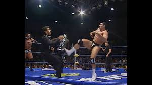

Nombre real: Victor Manuel Resendiz Ruiz
Fecha de nacimiento: 23 de enero de 1967
Lugar de nacimiento: Monterrey, Nuevo León, México
Alias: Latin Lover
Latin Lover es conocido por su carisma, técnica y su estilo rudo y sensual en el ring. Fue uno de los luchadores más populares en la década de los 90 y principios de los 2000 en la lucha libre mexicana.
Comenzó su carrera en los años 80 y se consolidó en empresas como AAA y CMLL. Además de su carrera como luchador, Latin Lover también ha trabajado como actor y cantante, participando en programas de televisión y teatro.
Además de su carrera en el ring, Latin Lover ha destacado en el mundo del espectáculo como actor y cantante. Es muy querido por el público mexicano por su carisma y versatilidad.